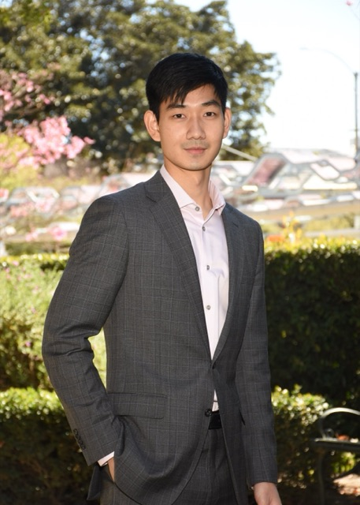
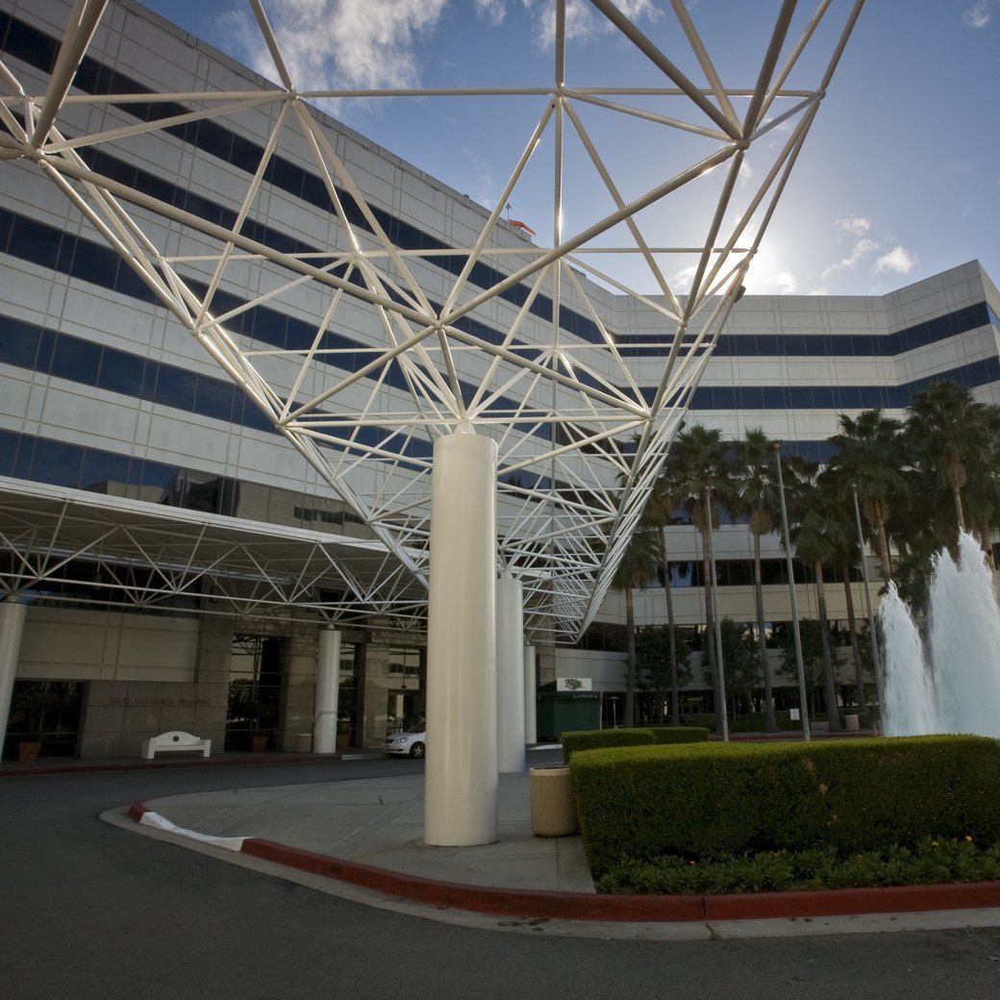
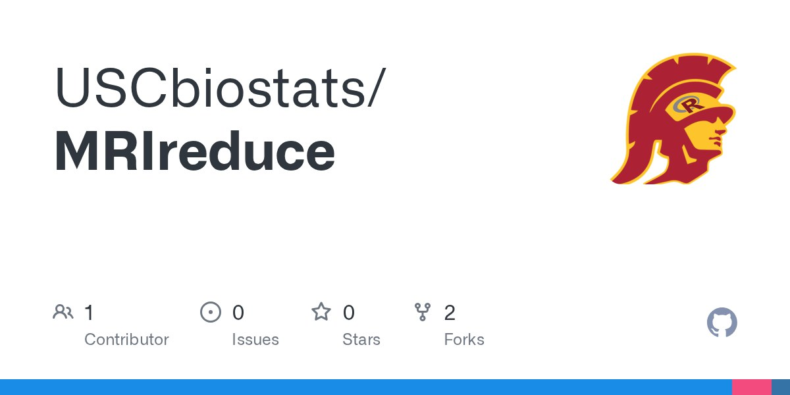
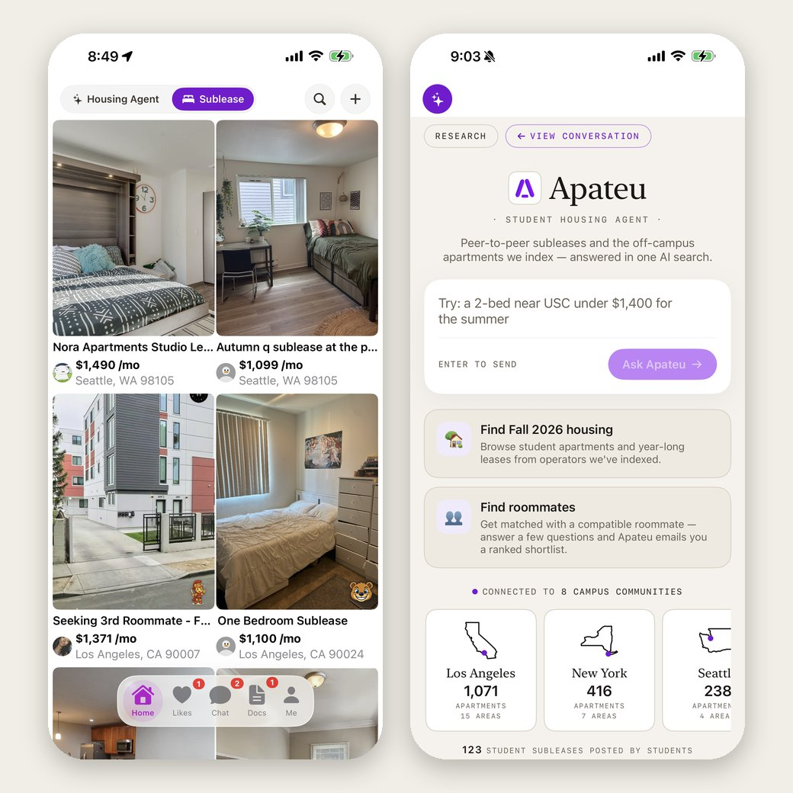
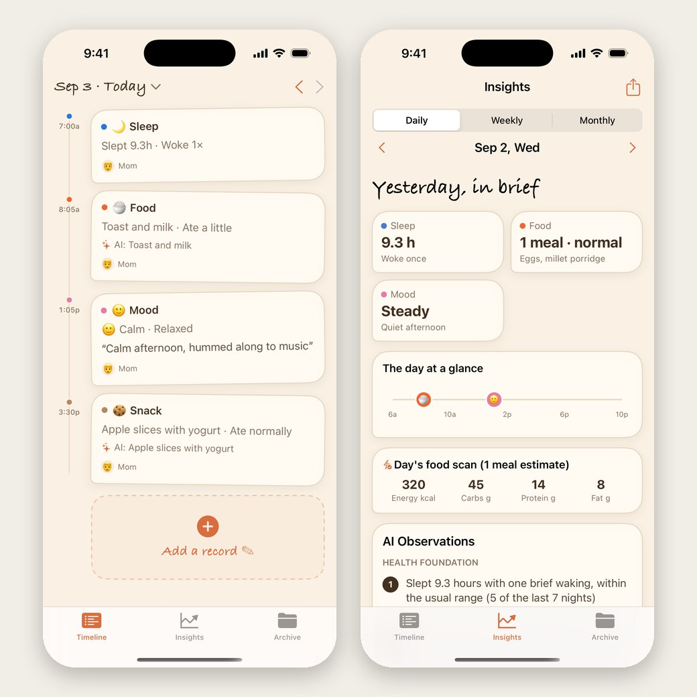
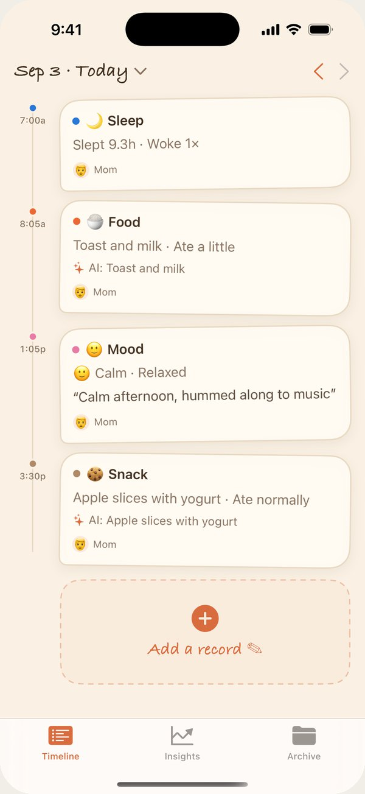
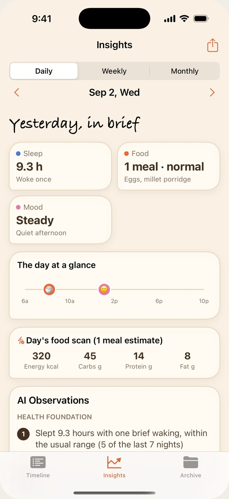
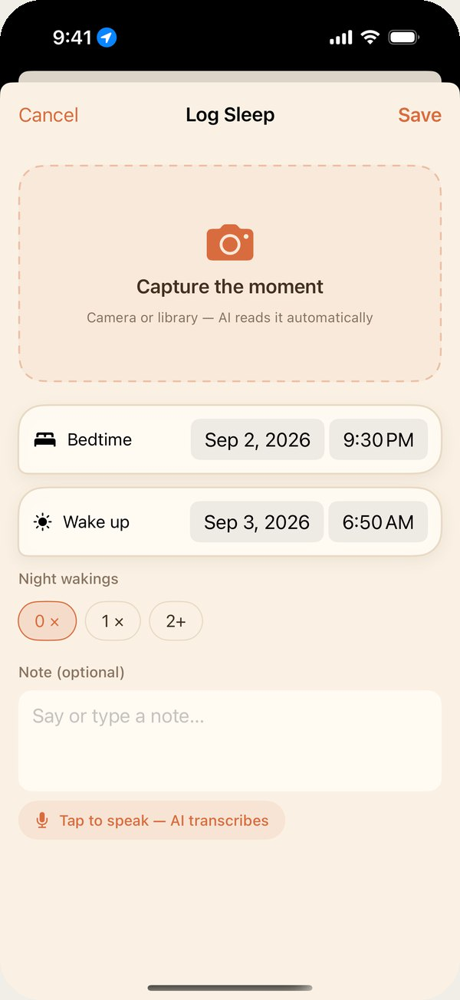
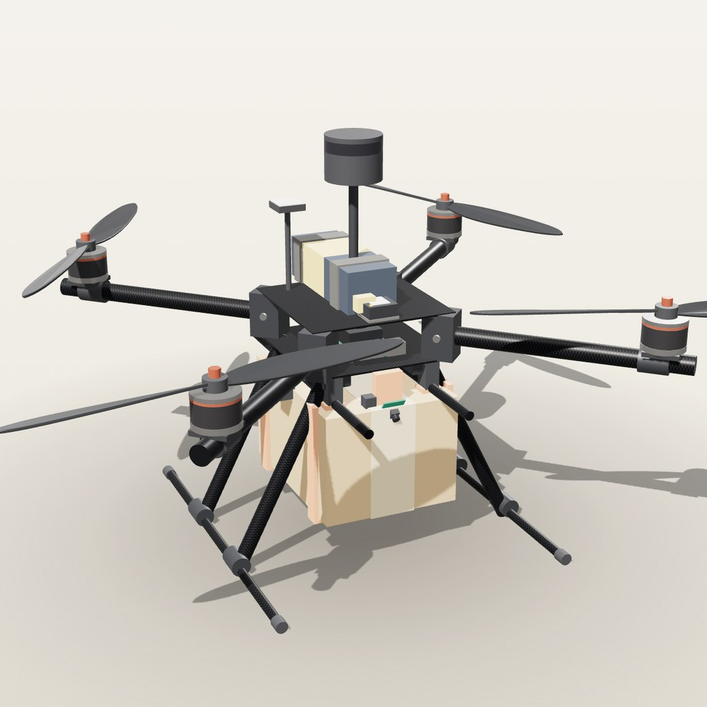

About
I live in Los Angeles. I’m a data scientist at the Keck School of Medicine of USC, where I work on NIH-funded studies of the brain, genes and the immune system, and the co-founder and AI engineer of Apateu, a student-housing marketplace and AI search engine. I’m also building an autonomous delivery drone with an AI camera. I grew up in China and studied statistics at Southeast University (东南大学) in Nanjing, then mathematics at Utrecht University and analytics at USC.
Most of my work is checking whether a result, a model or a machine is right enough to act on, and building the pipeline that makes it so.
Email: jamestian023@gmail.com. I’m also on LinkedIn and GitHub.

Things I’m interested in
Statistics and data science
I was a statistician before I was an engineer, and it is still how I think about everything below: what would it take to convince me this result is real?

Medical research at USCData scientist · Keck School of Medicine of USC, Division of Biostatistics · 2023 to presentThe computational analyst on five NIH-funded studies: air pollution and brain aging, childhood adversity and DNA methylation, immune signatures after trauma, a deep-learning model of adolescent brain structure, and hearing loss in children on chemotherapy.
MoreLess
The questions are big and human. Does traffic pollution age the brain? What does childhood adversity write into DNA? Can a scan predict a hormone? The data is enormous and noisy, so most of my job is building the pipeline that makes an answer trustworthy before anyone reads it.
My main project follows air pollution into the brain. Working with about 1,600 MRI scans from older women in the Women’s Health Initiative Memory Study, I created and maintain MRIreduce, an open-source R package on CRAN that turns raw brain images into structured features without a predefined atlas, building on my advisor’s Partition method. I then used high-dimensional causal mediation to ask which brain regions carry pollution’s effect on memory. I’m first author on the manuscript, now under revision.
- Harmonized eleven cohorts of blood samples from trauma and sepsis patients across three measurement platforms and found a 36-gene neutrophil signature that reproduced with 97.2% directional agreement (AAST 2026 abstract).
- Built a deep-learning pipeline with explainability built in that predicts adolescent hormone levels from brain structure in about 9,100 ABCD Study participants (OHBM 2026 abstract).
- Ran an epigenome-wide study of childhood maltreatment and DNA methylation: 453 young people, four timepoints, about 768,000 sites, kinship-adjusted mixed models on USC’s HPC cluster.
- Built and deployed PedsHEAR, a clinician-facing tool that estimates hearing-loss risk for children on cisplatin chemotherapy, around my advisor’s validated model.

AI engineering: building apps people use
I build apps on language models. In practice most of the work is deciding what the model is allowed to say and what the code has to verify.

ApateuCo-founder & AI engineer · with Danbi Jang · 2025 to presentA student-housing app. Students sublease to each other with a lease signed in the app, and an AI agent answers “a 2-bed near USC under $1,400 for the summer” with specific buildings and their current listed prices.
MoreLess
It started with a problem Danbi and I both had: we tried to sublease our own apartments and it was miserable. A group chat, no listing, no contract, no way to know if the stranger on the other end was real. So we built one ourselves and launched it on the App Store in September 2025.
Under the search engine is an index I built: 353 operator-specific adapters that read prices straight from property managers’ own websites across 3,700+ buildings in five metros, converted to a price per bed, because that is how students rent. The agent is a tool-use loop on Claude’s API with 34 tools, and a grounding layer keeps an amenity only when the building’s own page states it. I own the whole stack, SwiftUI, Node and MongoDB, and I wrote most of the adapters by directing AI coding agents the way a lead runs a small team.
- 1,000+ registered students, doubled in six months.
- Ten campus Instagram accounts run by AI agents we built, about 6,000 followers, nothing spent on ads.
- Two founders, no employees. Numbers as of August 2026.

MoonlightAI engineer / full-stack software engineer · San Diego · 2026An iPhone app for parents of children with autism. A parent records an observation with a photo or a voice note, and every morning the app reports what happened yesterday, what to watch, and which things tend to occur together.
MoreLess
Parents of a child who may not have the words to say how they feel keep track of a great deal, and are then asked to recall weeks of it at a short appointment. Moonlight is one place to record structured daily observations across built-in and custom categories, and it looks for patterns across them over weeks.
The rule I held to was that the language model may suggest a pattern, and must report the times it did not hold, but every number in a report comes from a database counter, never from the model. The app gives no medical advice: if the model drafts a line that reads like a treatment change, code replaces it with a fixed instruction to keep recording and consult a doctor. Names are redacted before every prompt, and the whole app works in Chinese and English.
I built it end to end: requirements gathered from parents with no technical background, a proposal they approved, weekly check-ins, one storage design reversed when their security checklist made a server necessary, and version one in production in August 2026 after a four-week build. SwiftUI, Swift Charts, Node, MongoDB, OpenAI and AWS.



Electrical engineering: putting AI on hardware
Everything above runs on a server or a phone. I want to learn what it takes for AI to work when it has motors, sensors and a battery, and a mistake has physical consequences.

An autonomous delivery droneMentor and autonomy engineer · with a high-school student in San Diego · summer 2026 to presentA drone that carries a one-kilogram package from A to B and finds its landing marker with an AI camera, built together with a high-school student I mentor. Everything has flown in simulation so far; the parts are on order.
MoreLess
The design splits the brain in two. ArduPilot on the Pixhawk stays the pilot: stabilization, GPS, failsafes, geofence and the human’s override switch. A reinforcement-learning navigator on the Raspberry Pi decides where to go and where to look, reading a spinning lidar for obstacles, the AI camera for the landing marker, and the autopilot’s own state twenty times a second. It will be trained on thousands of simulated drones in NVIDIA Isaac Lab and must pass in ArduPilot’s own simulator before it touches the aircraft.
So far it has all flown in simulation, on purpose. Our first flight code carried a 2.7 km route over a virtual Mission Bay on three simulated airframes without changing a line. A browser dashboard streams live telemetry and lets you redraw the route on a map, and a fault lab kills a motor, jams the GPS and fakes a dying battery to see what the autopilot does. The student now decides what the delivery demo needs and which layer of the system should own it, which is the part I find most meaningful.
- 650 mm airframe, 15-inch propellers, 6.3 kg maximum takeoff weight; the X500 we first considered had 280 g of margin left once the AI payload was aboard.
- One-kilogram package, released by a servo latch over a marker the camera finds.
Education
- 2023M.S. in Analytics, University of Southern California, Los Angeles
- 2021M.S. in Mathematics, Utrecht University, the Netherlands
- 2020B.S. in Statistics, Southeast University (东南大学), Nanjing
Selected writing and software
- 2026Traffic-related air pollution, brain structure and cognitive aging in older women (WHIMS-AIR).
- 2026MRIreduce: ROI-based transformation of neuroimages into high-dimensional data frames.
- 2026Hormone-sensitive gray matter during early adolescence: deep learning and biasing confounds.
- 2026Same storm, different dataset: reproducibility of leukocyte transcriptomic changes after blunt trauma.
- 2025HDCIT: a high-dimensional causal inference test for single exposure, multiple mediators and single outcome.
Elsewhere
GitHub: jtian123. LinkedIn: jamestian023. Apateu: westapt.com/agent. Email: jamestian023@gmail.com.